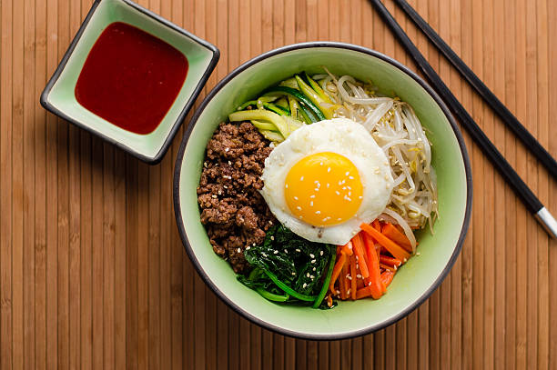

Bibimbap (Korean Rice With Mixed Vegetables)

Description
Ingredients
- 1 English cucumber, cut into matchsticks
- ¼ cup gochujang (Korean hot pepper paste) (Optional)
- 1 bunch fresh spinach, cut into thin strips
- 1 tablespoon soy sauce
- 2 teaspoons olive oil, divided
- 2 carrots, cut into matchsticks
- 1 clove garlic, minced
- 1 pinch red pepper flakes
- 1 pound thinly-sliced beef top round steak
- 4 large eggs
- 4 cups cooked white rice
- 4 teaspoons toasted sesame oil, divided
- 1 teaspoon sesame seeds
- 2 teaspoons gochujang (Korean hot pepper paste), divided (Optional)
Steps
- Stir together cucumber pieces and gochujang paste in a bowl; set aside.
- Bring about 2 cups water to a boil in a large nonstick skillet and stir in spinach; cook until bright green and wilted, 2 to 3 minutes.
- Drain spinach and squeeze out as much moisture as possible; set spinach aside in a bowl and stir in soy sauce.
- Heat 1 teaspoon olive oil in a large nonstick skillet; cook and stir carrots until softened, about 3 minutes.